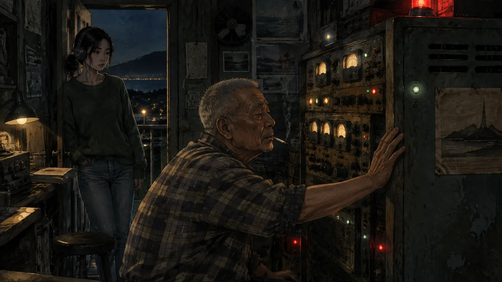
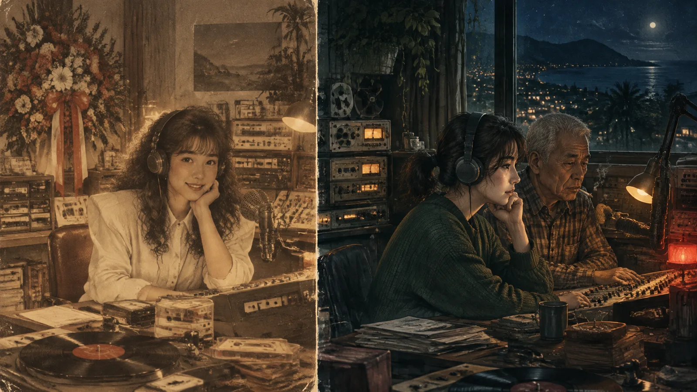

第一章沒有人聽的電台
「東海岸之聲」的收聽率，用老曾的話說，是「零點零零零幾，後面幾個零我懶得數」。
電台在台東市的邊緣，一棟兩層樓的水泥房子，一樓是辦公室，二樓是播音室，屋頂上豎著一根一九八七年架的天線，鏽得像一根被海風啃過的骨頭。發射機也是一九八七年的，放在二樓後面的機房裡，一台冰箱那麼大，開機的時候會發出低低的嗡嗡聲，整棟房子都跟著微微地震。
周以寧在這裡做了兩年的深夜節目，午夜十二點到凌晨兩點，節目叫「午夜點歌」。理論上聽眾可以打電話進來點歌，實際上兩年來她接過的電話不超過三十通，其中十一通是打錯的，六通是老曾喝醉了打來測試線路的，剩下的，大多是睡不著的老人，點的歌她的資料庫裡通常沒有。
她不介意。她二十七歲，大學念的是廣電，畢業後在台北的電台當了兩年助理，然後她父親中風，她回台東照顧他。父親去年走了，她沒有再回台北。老曾說：「妳要走隨時可以走，反正也沒有人聽。」她說：「再看看。」
她喜歡深夜的播音室。喜歡那盞紅色的「ON AIR」燈，喜歡老式的麥克風，喜歡把耳機戴上以後世界只剩下自己的聲音那種感覺。她對著一個沒有人的城市說話，說今晚的天氣，說明天的漁市，說一首歌是誰在哪一年唱的。她不知道有沒有人在聽。她覺得有沒有都一樣。
直到那一通電話。
✦
那是三月的一個星期二，凌晨一點十四分。
以寧剛放完一首陳昇的歌，正在看下一首要放什麼。電話響了。電台的電話是很老的那種，米色的，按鍵上的數字都磨掉了，響的時候是機械式的鈴聲，很大聲，每次都把她嚇一跳。
她拿起話筒。「東海岸之聲，午夜點歌，您好。」
話筒裡先是一陣雜訊，像是收訊很差的無線電。然後是一個女人的聲音，很小，很遠，像是隔著一層霧在講話。
「我要點一首歌。」
「好的，請說。」
「《港都夜雨》。」女人說，「給明天早上七點，台十一線一百五十二公里的落石。」
以寧愣了一下。
「不好意思，是給……誰？」
「落石。」女人重複，「不會有人受傷。可是會塞車塞到中午。」
然後電話掛了。
以寧握著話筒，聽著嘟嘟嘟的聲音，聽了大約十秒。然後她把話筒放回去，看著播音台上的時鐘：一點十五分。她想，大概是惡作劇。台東的深夜沒有什麼事情可以做，惡作劇也是一種。
她放了《港都夜雨》。
第二天早上七點零四分，台十一線一百五十二公里處，一塊卡車大的岩石從山壁上滾下來，砸在路中間。沒有人受傷。單線通車到中午十一點半。
第二章第二通電話
以寧是在中午的新聞上看到的。
她坐在父親留下的那張沙發上，端著一碗泡麵，看著電視畫面裡那塊岩石，看著記者站在岩石旁邊講話。她把泡麵放下，拿起手機，查了台十一線的里程。一百五十二公里，就在那塊石頭的位置。
她想：巧合。台十一線每年落石十幾次，猜中一次不難。
可是那個女人說了「早上七點」，說了「不會有人受傷」，說了「塞到中午」。
以寧把泡麵吃完，去電台，把昨晚的節目錄音調出來——電台有自動錄音，每一集都存三十天。她把那通電話的部分剪出來，反覆聽了十幾次。女人的聲音很模糊，像從很遠的地方傳來。背景有一種很低的嗡嗡聲，穩定的，機械的。
她聽了很久，才意識到那個嗡嗡聲是什麼。
是發射機的聲音。她每天晚上都聽到的、一九八七年的那台發射機的聲音。
那個女人是從這棟房子裡打電話的。
✦
第二通電話在一個星期後，星期二，凌晨一點十四分。
以寧這次有準備。她把錄音機打開，把手機放在旁邊準備拍照，電話一響她就接了起來。
「東海岸之聲——」
「我要點一首歌。」還是那個聲音，隔著霧，「《夜來香》。給星期四晚上九點，中華路一段到三段的停電。三個小時。」
「妳是誰？」
雜訊。然後：「妳會知道的。」
「妳為什麼知道這些事？」
「因為已經發生了。」女人說。她的聲音忽然變得很清楚，清楚到以寧的手臂上起了雞皮疙瘩，「對妳來說還沒有，對我來說已經發生了。」
「妳在哪裡？」
「我在播音室。」
以寧猛地回頭。播音室裡只有她一個人，紅色的「ON AIR」燈亮著，隔音玻璃外面是黑的辦公室，走廊的燈沒有開。
「妳在哪個播音室？」
電話掛了。
星期四晚上九點零二分，中華路一段到三段停電。台電說是變電箱故障。三個小時零七分後恢復供電。
✦
老曾是在星期五聽她說這件事的。
老曾六十三歲，是這個電台的台長、業務、工程師和唯一的全職員工。他在這裡做了三十六年，從一九八七年電台開台那年開始。他喝酒，可是不多，抽菸，很多。以寧把兩通電話的錄音放給他聽，他聽完，把菸熄掉，很久沒有說話。
「妳說電話是從這棟房子打的。」
「背景有發射機的聲音。」
老曾站起來，走到機房，以寧跟在後面。發射機在角落，嗡嗡地響著，機殼上貼著一張泛黃的標籤，寫著製造年份。老曾把手放在機殼上，像在摸一隻很老的狗。

「這台機器，」他說，「一九八七年裝的。三十六年，沒有換過。它壞過幾次，可是每次都修好了。我有時候覺得它有自己的想法。」
「老曾，你在說什麼？」
老曾轉過身，看著她。
「妳不是第一個接到這種電話的人。」他說。
第三章一九八七
一九八七年，「東海岸之聲」開台。

那時候台東沒有幾個電台，這一台是幾個地方仕紳湊錢辦的，目的是「宣揚地方文化」，實際上大部分時間在播歌。第一個深夜節目的主持人叫沈曼，二十四歲，從高雄來的，聲音很好聽，據說有一半的台東漁民為了聽她的聲音而晚睡。
「她做了八個月。」老曾說。他們坐在辦公室裡，老曾又點了一根菸，「第七個月的時候，她開始接到電話。跟妳一樣，星期二，凌晨一點多，一個女人的聲音，說要點歌，給明天會發生的事。」
「她信了？」
「一開始不信。後來信了。她說那個女人猜對了七次。落石、停電、漁船翻覆、一個小孩走失後找到。全部都對。」老曾吐出一口煙，「第八次，那個女人說，一個星期後，一艘從綠島開回來的交通船會出事。她說了船名，說了時間。」
「然後呢？」
「沈曼在節目上說了。」老曾說，「她說：如果你認識那艘船上的人，叫他們那天不要搭。她說了三個晚上。」
以寧等著。
「船沒有出事。」老曾說，「那天船公司因為天氣不好，停駛了。沒有人知道是因為她的廣播，還是因為天氣。可是股東們很生氣。他們說她妖言惑眾，說電台被人檢舉，說如果船真的出事，電台要負責。她被開除了。」
「她去哪裡了？」
「回高雄。之後沒有消息。」老曾把菸熄掉，「二〇〇三年，我聽說她過世了。癌症。四十歲。」
以寧看著他。
「你為什麼沒有跟我說過這件事？」
「說了妳會信嗎？」老曾說，「妳會信一台一九八七年的發射機會接到未來打來的電話嗎？」
以寧沒有回答。她看著機房的方向，看著那台冰箱一樣大的東西，聽著它嗡嗡的聲音。
「沈曼有沒有說過，」她慢慢地問，「那個打電話的女人，是誰？」
老曾沉默了很久。
「她說，」他終於說，「聽起來像她自己。」
第四章第三通電話
第三個星期二，以寧在電話響之前就把話筒拿了起來。
「妳是誰？」她說。
雜訊。發射機的嗡嗡聲。然後那個聲音，比前兩次都清楚，清楚到以寧可以聽出來那個聲音有一點沙啞，有一點疲倦，像是熬了很多夜。
「我要點一首歌。」
「先告訴我妳是誰。」
「這不重要。」
「對我很重要。」
電話那頭安靜了幾秒。然後女人說：「妳覺得我是誰？」
以寧握緊話筒。她想說「沈曼」，可是沈曼已經死了二十年。她想說「我自己」，可是這太荒謬了。她什麼都沒有說。
「《望春風》。」女人說，「給下星期二，傍晚五點四十分，金崙大橋。一台從知本開往台東市的遊覽車。車上有三十二個人，是屏東來的老人旅行團。」
以寧的心跳漏了一拍。
「會發生什麼事？」
「橋上會有一台砂石車，剎車失靈。」女人說，「遊覽車會被撞到護欄外面。」
「多少人——」
「十九個。」
以寧覺得播音室的空氣變稀薄了。她聽見自己的呼吸聲，很大，很急，在耳機裡放大好幾倍。
「我要廣播出去。」她說，「我要每天晚上說，說到那天為止。」
「不要。」
「為什麼？」
「因為妳廣播了，遊覽車的司機會聽到。」女人說，「他會改走山路，走台九線。那天下午山路有土石流。三十二個人，一個都不剩。」
以寧說不出話來。
「這是第一次。」女人說，聲音裡有一種很深很深的疲倦，「第一次我廣播了。所以我知道。」
「什麼意思？第一次？」
「妳以為我為什麼要打電話？」女人說，「我打了很多次了。每一次都不一樣。落石那次，我第一次沒有告訴妳，妳自己開車經過，被塞了一整個早上，心情不好，做錯了一件事，後面全部都不一樣了。停電那次——算了，妳不需要知道。」
「妳是我。」以寧說。不是問句。
雜訊。很長的雜訊。
「妳是一個星期以後的我。」以寧說，「妳從這個播音室打電話，發射機把訊號送回一個星期以前。妳一直在打，一直在改。」
女人沒有承認，也沒有否認。她只是說：「下星期二，傍晚五點四十分，金崙大橋。不要廣播，不要報警，報警他們會封橋，遊覽車一樣會改走山路。妳自己想辦法。」
「什麼辦法？」
「我不知道。」女人說，「我每一次都想不到。所以我才一直打回來。」
電話掛了。
第五章貨車
星期三，以寧開著父親的貨車去了一趟金崙。
貨車是父親二十年前買的，藍色的，中華得利卡，車斗上有他自己釘的木框，用來載他在市場賣的水果。父親中風以後就沒有再開過，可是他每個星期都要以寧發動一次，「不然電瓶會死」。他走了以後，以寧還是每個星期發動一次。她不知道為什麼。可能是因為引擎聲很像父親咳嗽的聲音。
從台東市到金崙大橋，走台九線，四十七公里。她開了五十五分鐘，因為她一路上都在看路。她看砂石車從哪裡出來——大部分從太麻里以南的幾條產業道路，滿載的時候壓得車尾很低，開起來像一頭吃太飽的牛。她看橋。金崙大橋是一座很普通的橋，兩線道，水泥護欄大約到腰，橋下是乾的河床，鋪滿灰白色的石頭，從橋面到河床大約十公尺。
十公尺。一台遊覽車從這裡翻下去，三十二個人，會剩下十三個。
她把車停在橋南端的路肩，下車，走上橋。傍晚五點四十分，太陽在山的後面，把橋面照成橘色。車不多。一台砂石車從她旁邊開過去，帆布啪啪地響，她感覺到橋在震。
她在橋上走了一個來回，用手機的碼錶量時間。從南端的路口到橋中央，一台時速六十公里的車要十二秒。從北端的路口到橋中央，一台時速五十公里的遊覽車要十五秒。如果砂石車在南端剎車失靈，它會在十二秒後撞上橋中央的任何東西。
她站在橋中央，看著兩端。
她想：如果我在這裡。
她想：如果我在這裡，開著一台一噸半的貨車。
她沒有把這個想法想完。她走回車上，發動引擎，聽著那個像咳嗽的聲音，開回台東。
✦
星期四晚上，老曾在播音室裡教她一件事。
「妳說妳想讓聽眾的電話直接播出去。」老曾說，「這個很簡單，一九八七年就有這個功能了。」
他指著播音台上一排按鈕裡的一個，黑色的，上面的標籤已經磨掉了。
「按這個，電話線路就切進發射機的迴路。妳在話筒裡講的話，聽眾在收音機裡聽得到。對方講的話也聽得到。沈曼以前常用，她讓點歌的人自己在廣播裡講為什麼要點這首歌。」
「那如果沒有人打進來，我自己拿起話筒講呢？」
老曾看了她一眼。
「那就是妳的聲音進發射機，繞一圈，再回到電話線。」他說，「妳會在話筒裡聽到自己的聲音，晚一點點，像回音。以前我們叫這個『打給自己』。」
以寧看著那個黑色按鈕。
「老曾，」她說，「沈曼有沒有按過這個按鈕，然後打給自己？」
老曾沒有立刻回答。他把菸拿出來，看了看，又放回去——播音室裡不能抽菸，這是他自己定的規矩，三十六年來只有他自己會違反。
「她被開除的前一天晚上，」他說，「我下班的時候經過播音室，看到她一個人坐在裡面，拿著話筒，在講話。沒有人打進來，燈也沒亮。她對著話筒講，講了很久。我以為她瘋了。」
「她講什麼？」
「我沒有聽。」老曾說，「我應該聽的。」
✦
星期五，以寧去了知本。
她找到那家溫泉旅館，「福泰旅遊」下星期二會在這裡上車。她坐在旅館對面的便利商店，看著門口。她不知道自己在看什麼。她想看那台遊覽車，想看那個司機，想看那些老人——可是他們下星期二才會來。今天門口只有幾個日本觀光客，和一隻睡在盆栽旁邊的狗。
她買了一罐咖啡，坐了一個小時。
然後她想到一件事：那個女人說「我打了很多次了」。她說落石那次，她第一次沒有告訴以寧，以寧自己開車經過，被塞了一整個早上，心情不好，「做錯了一件事」。
以寧不知道那件事是什麼。可是她忽然明白，那個女人不只是在救遊覽車上的人。她是在一次一次地修正，修正每一個小小的岔路，讓以寧走到「這一次」——走到一個星期三會開車去看橋、星期四會問老曾按鈕的事、星期五會坐在便利商店裡想這些事的以寧。
一個星期以後的她，正在努力把她變成一個想得到辦法的人。
以寧把咖啡喝完，走出便利商店。那隻狗抬起頭看了她一眼，又睡了。
她回到車上，坐了很久，然後她把手放在方向盤上，對著擋風玻璃說：「爸，我可能要把你的車撞壞。」
引擎沒有回答。它只是像平常一樣，咳嗽了兩聲，發動了。
第六章金崙大橋
星期六和星期日，以寧幾乎沒有睡。
她把所有的可能性寫在一張紙上，一條一條劃掉。報警：封橋，改走山路。打給遊覽車公司：改走山路。找司機：他不會信。打給砂石車公司：她不知道是哪一台。打電話給公路局說橋要維修：他們會查，查了就會知道她說謊，然後什麼都不會發生——除了她會被告。
紙上最後只剩下一條沒有劃掉。她看著那一條，看了很久，然後把紙摺起來，放進口袋。
星期一晚上，她坐在播音室裡，看著那台電話。她想，如果她什麼都不做，十九個人會死。如果她廣播，三十二個人會死。如果她報警，三十二個人會死。
她忽然想到一件事。
那個女人說：「妳自己想辦法。」
她說「我每一次都想不到」。可是她每一次都打回來。她打回來，是因為她相信「這一次」會不一樣。她相信某一次的以寧，會想到辦法。
以寧看著時鐘。凌晨一點十四分。
電話沒有響。
她想：對，星期一。她只在星期二打。
✦
星期二，傍晚五點二十分，以寧把車停在金崙大橋南端的路肩。
她開的是父親留下的那台老貨車，藍色的，車斗上還有父親釘的木框。她坐在駕駛座上，看著橋。橋很長，很直，橋面上車不多，偶爾一台砂石車呼嘯而過，車斗上的帆布啪啪地響。
五點三十分。她看見遊覽車了。
從南邊來——不對，遊覽車是從知本往台東市，應該從北邊來。她看錯了，那是另一台。她把手放在方向盤上，手心全是汗。
五點三十八分。
北邊的路口出現一台白色的遊覽車，車身上寫著「福泰」。它慢慢地開上橋。同一時間，南邊的山路口，一台滿載的砂石車衝了出來，速度很快，太快了，車頭有一點歪，像是司機在用力踩一個沒有反應的東西。
以寧發動引擎。
她沒有時間想。她把貨車開上橋，開到砂石車和遊覽車之間，然後她做了一件她事後想起來會發抖的事——她把方向盤打橫，貨車橫在橋面上，擋在砂石車前面，然後她跳車。
她跳得很難看，膝蓋撞在柏油路上，皮擦掉了一大塊。她聽見砂石車的喇叭聲，聽見輪胎摩擦的尖叫，聽見金屬撞在金屬上的巨響。
然後她抬起頭。
砂石車撞上了她的貨車。貨車被推了二十公尺，撞上護欄，停下來了。砂石車的車頭陷進貨車的車斗裡，冒著煙，可是停下來了。遊覽車在三十公尺外緊急煞車，車上的老人們扒著窗戶往外看，臉上全是驚慌。
沒有人掉下橋。
以寧坐在路中間，膝蓋在流血，看著那台被撞爛的、父親留下的貨車。她想哭，可是哭不出來。她只是坐在那裡，聽著遠處傳來的警笛聲。
第七章最後一通
她在醫院住了兩天。膝蓋縫了七針，手肘骨裂，其他沒事。
警察來做筆錄，問她為什麼把車橫在橋上。她說她看到砂石車不對勁，她想擋住它。警察說妳知道這很危險嗎，她說知道。警察說妳很勇敢，她說謝謝。她沒有說電話的事。
砂石車司機說剎車失靈，他踩到底都沒有反應，他以為他會撞上那台遊覽車，然後他看到一台藍色貨車橫過來。他在筆錄裡說：「我以為那個人瘋了。」
遊覽車上的三十二個人，一個都沒有受傷。有幾個老太太到醫院來看她，帶了一袋屏東的蓮霧，說：「小姐，妳是我們的貴人。」
老曾也來了。他站在病床邊，看了她很久，然後說：「妳怎麼知道的？」
「電話。」
「妳做到了。」老曾說，「沈曼沒有做到的事，妳做到了。」
以寧看著窗外。台東的天空很藍，藍得像什麼都沒有發生過。
「老曾，」她說，「下星期二，我要回去播音室。」
「妳的腳——」
「我要接一通電話。」她說，「或者，打一通。」
✦
✦
星期一，出院以後的第一天，她回到電台整理東西。
一樓辦公室的最裡面有一間儲藏室，堆著三十六年來的雜物：壞掉的麥克風、過期的節目表、幾箱沒有人要的黑膠唱片。老曾說裡面「什麼都有，什麼都找不到」。以寧拄著拐杖進去，本來是要找一條備用的耳機線，結果在最底下的一個紙箱裡，看到一捲盤式錄音帶。
盤帶的標籤上寫著一個日期：一九八七年十一月。下面有一行字，是用藍色原子筆寫的，字跡秀氣：「打給自己。沈曼。」
以寧把盤帶抱回播音室。電台還留著一台盤帶機，老曾說是「以防哪天有人想聽老東西」。她把帶子裝上去，按下播放。
先是很長的雜訊。發射機的嗡嗡聲。然後是一個女人的聲音，年輕，清亮，和以寧在老曾的描述裡想像的一模一樣。
「我要點一首歌。」沈曼說。
停頓。雜訊。
「我不知道妳是誰。可能是我，可能是很多年以後坐在這個位子的另一個人。我被開除了，明天就要走了。船沒有出事，可是我知道那不是因為我。我什麼都沒有做到。」
「可是我想跟妳說一件事。這台機器會把聲音送回去。我試過，它真的會。它送到哪裡，送給誰，我不知道。可是它會送。」
「所以我要一直說。說到有一天，有一個人接到了，然後想到辦法。」
「《港都夜雨》。」沈曼說，「給那一個人。」
然後是雜訊，很長，一直到帶子的盡頭。
以寧坐在播音室裡，聽完了整捲帶子，包括那段什麼都沒有的雜訊。她把盤帶取下來，放回盒子裡，抱在膝蓋上。她想起那個打電話來的女人，那個隔著霧的聲音。她一直以為那是一個星期以後的自己。
也許是。也許不只是。也許那個聲音裡，有一點點沈曼，有一點點每一個坐過這個位子的人，有一點點每一個對著沒有人的城市說話的人。
三十六年。發射機嗡嗡地響。
她想：好。那我也一直說。
星期二，凌晨一點十四分。
以寧坐在播音室裡，膝蓋上綁著繃帶，手肘打著石膏。「ON AIR」的燈亮著，發射機在後面嗡嗡地響。她剛放完一首歌，是《望春風》。
電話沒有響。
她等了一分鐘。兩分鐘。五分鐘。
電話沒有響。
她忽然明白了。
那個女人不會再打來了。因為那個女人是一個星期以後的她，而一個星期以後的她——就是現在的她——已經知道結果了。遊覽車沒有掉下橋，十九個人沒有死，三十二個人也沒有死。沒有什麼需要改的了。
可是，如果那個女人不打，一個星期前的以寧就不會知道金崙大橋的事，就不會去擋那台砂石車，遊覽車就會掉下去。
所以那通電話還是要打。
由她打。
以寧伸出手，拿起話筒。她不知道要撥什麼號碼。她看著那台米色的老電話，看著磨掉的按鍵，然後她想：這台電話從來就不需要號碼。它接的是發射機。
她按下播音台上的一個按鈕，把電話線路切進發射機的迴路——這是老曾教她的，用來讓聽眾的電話可以直接播出去。然後她對著話筒說話。
「我要點一首歌。」
她聽見自己的聲音在耳機裡迴盪，隔著發射機的嗡嗡聲，變得很遠，很模糊，像隔著一層霧。
「《港都夜雨》。給明天早上七點，台十一線一百五十二公里的落石。不會有人受傷。可是會塞車塞到中午。」
她放下話筒。
播音室裡很安靜。發射機嗡嗡地響。
她不知道那通電話有沒有打出去，打到哪一個星期二，打給哪一個以寧。她只知道，她會繼續打。每一個星期二，凌晨一點十四分。落石，停電，金崙大橋。然後是別的事，她還不知道的事，一個星期以後的她會知道的事。
她會一直打。
因為總有一次，某一個以寧，會想到辦法。
尾聲
「東海岸之聲」的收聽率還是零點零零零幾。
以寧還是做午夜十二點到兩點的節目。她的膝蓋好了，留了一道疤。父親的貨車報廢了，她用保險金買了一台二手的，還是藍色的。老曾還是抽很多菸，喝一點酒，偶爾喝醉了打電話進來測試線路。
砂石車公司賠了她一台貨車的錢，她拿去買了一台二手的得利卡，還是藍色的，車斗上沒有木框。她請老曾幫她釘了一個。老曾釘得很醜，可是她沒有拆。
屏東的老太太們每個月寄一箱水果來電台。蓮霧、芒果、木瓜，看季節。箱子上永遠寫著同一行字：「給貴人小姐」。老曾說妳可以回台北了，妳現在是台東的名人了。以寧說再看看。
有一天，一個新來的工讀生問她：「以寧姐，妳的節目有人聽嗎？」
以寧想了想。
「有一個。」她說。
「誰？」
「一個每個星期二打電話來的女人。」以寧說，「她點的歌，我每次都放。」
工讀生問：「她叫什麼名字？」
以寧看著窗外。台東的清晨有霧，從海上飄過來，把整條路都蓋住了，要到七點多才會散。
「阿霧。」她說，「她說她叫阿霧。」
（完）
留言板
看不懂、想補充、發現錯誤都歡迎留言；填個暱稱就能發。